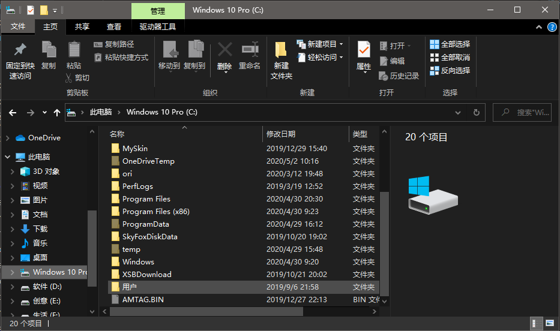
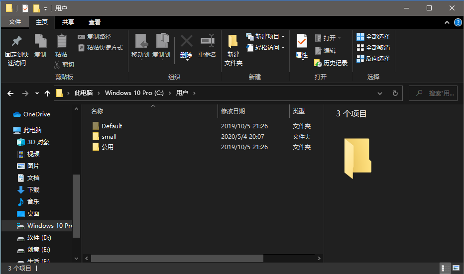
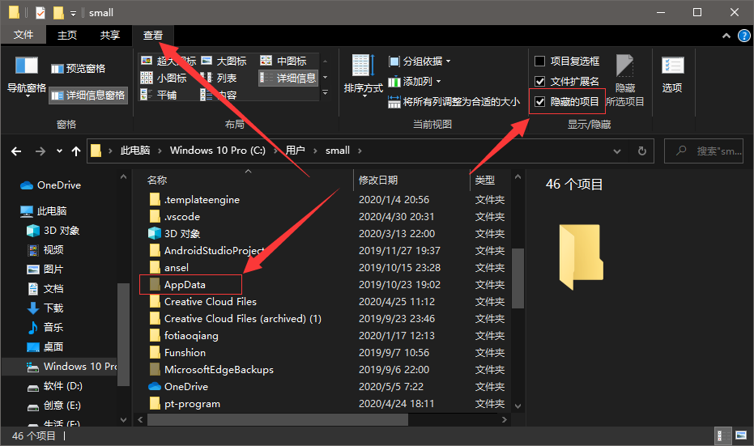
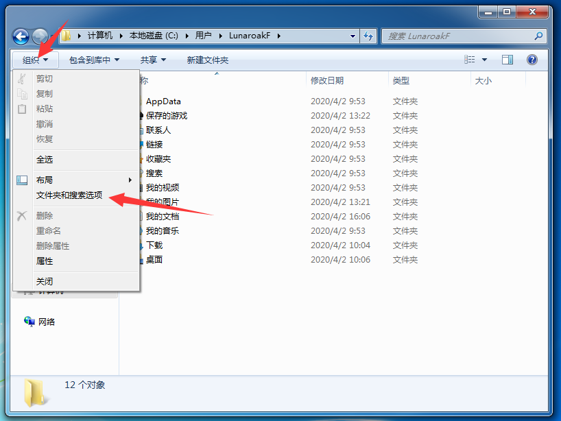
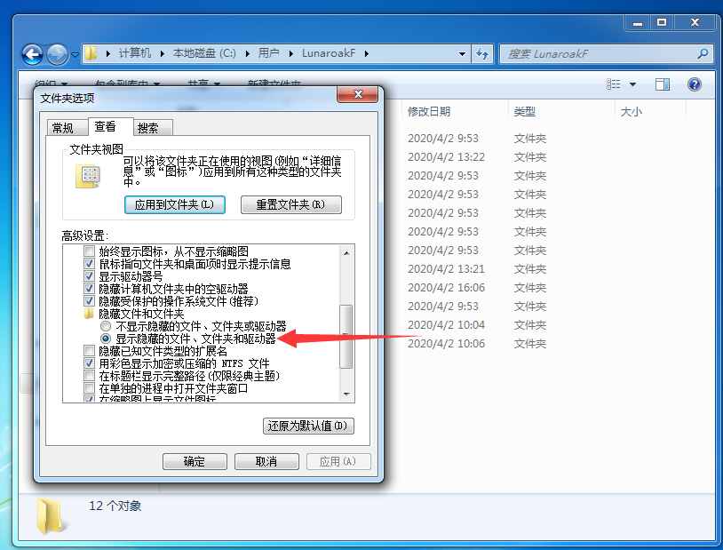
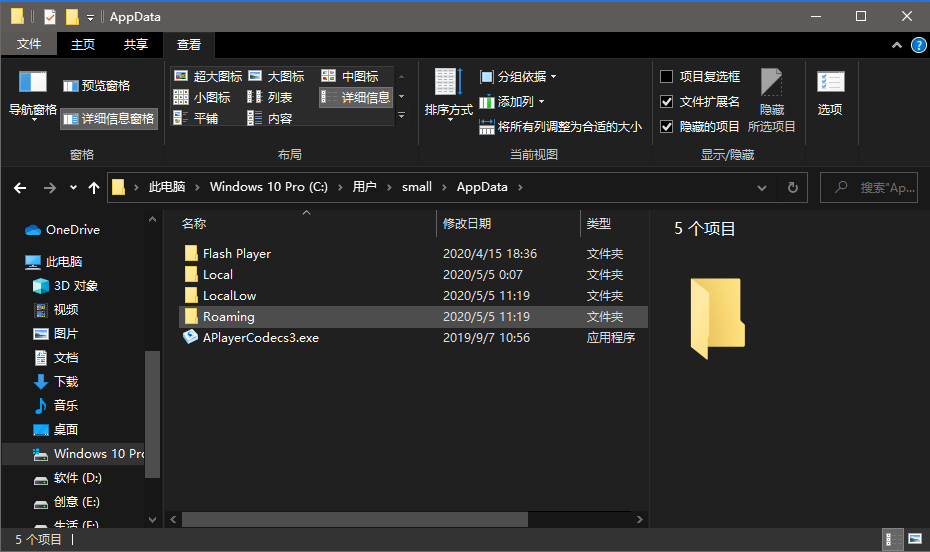
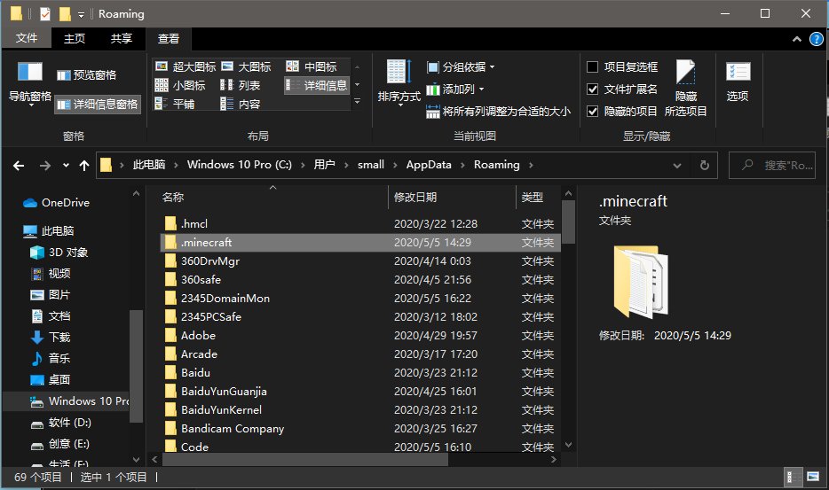
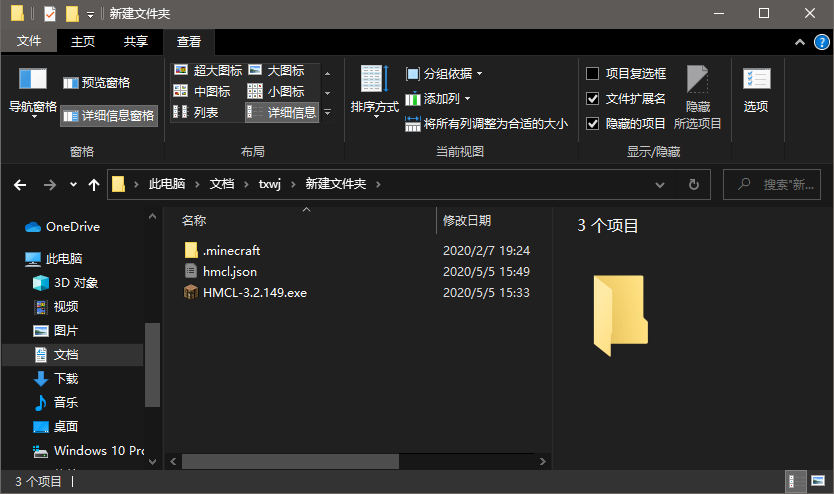

我的世界国际版交流
-分支界面-
Java游戏目录
Minecraft Launcher
官方启动器
默认游戏路径
打开你的C盘，里面有一个叫“用户”或者“Users”的文件夹

我的电脑用户的名称叫“small”则我需要打开small文件夹，你是什么用户名就开哪个文件夹

Windows10/8.1/8系统中请在顶部查看按钮里勾选“隐藏的项目”
即可在当前文件夹下找到AppData文件夹

Windows7系统中请在左上角组织里点开文件夹和搜索选项

再在查看里选择显示隐藏的文件

再打开AppData文件夹里的Roaming文件夹即可找到.minecraft文件夹


Hello Minecraft! Launcher
HMCL启动器
默认游戏路径
其.minecraft文件夹与hmcl启动器在同一个目录
